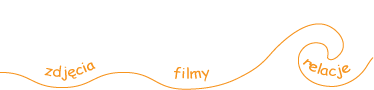

|  |

| Kto latem jezdzi do Brazylii? |
| Jak tam dotrzec? |
| Jericoacoara |
| Baza |
| Wiatr |
| Spot |
| Zdrowie |
| Jedzenie i wrazenia |
| Co poza windurfingiem? |
| Statystyki |
Najwygodniej czarterem bezpośrednio z Warszawy do Fortalezy, 12 godzin z międzylądowaniem na wyspach Zielonego Przylądka.
I taki lot, a właściwie cały wyjazd do Fortalezy zarezerwowaliśmy na początku maja w Itace. Cena całej wycieczki z pobytem wychodziła taka sama jak najtańsza opcja przelotu samolotem rejsowym (Lufthansa) – około 4000 zł, zaletą zaś był lot bezpośredni.
Niestety na początku lipca dostaliśmy informację z Itaki, że impreza została anulowana z powodu małego zainteresowania. Proponowali, w atrakcyjnej cenie wyjazd w listopadzie. Niestety to nie wchodziło w grę ze względu na szkołę/pracę/urlopy i poczynione już inne rezerwacje.
Stanęliśmy znów przed problemem dojazdu.
Zdecydowaliśmy się na najtańszą Lufthansę, która leci dookoła. Pierwsza przesiadka we Frankfurcie, skąd leci się do Sao Paulo, ok 11 godzin (3500 km na południe od Fortalezy), po to by następnie lecieć z Sao Paulo brazylijskimi liniami TAM ok. 4 godzin z powrotem do Fortalezy. Czyli nadrabiamy dystans Warszawa-Sharm el Sheik i z powrotem.
Najlepszą opcją, poza czarterem, wydaje się być lot do Lizbony lub Frankfurtu, a dalej portugalskimi liniami TAP bezpośrednio do Fortalezy (ok. 7 lub 9 godzin). Z tym, że w czasie kiedy sprawdzaliśmy to cena tego przelotu była ok 250 Euro droższa od przelotu Lufthansą.
Dostanie się do Fortalezy to jeszcze nie koniec podróży. Od Jericococary dzieli nas jeszcze 350 km czyli następne 3,5-4 godziny jazdy, jeśli jedzie się samochodem lub 6-7 godzin korzystając z autobusu rejsowego.
Ostatnie 45 minut z Jicoci jedzie się drogą gruntową, by w Prei (tam jest baza kajtowa Mistrala) wjechać na drogę biegnącą plażą. Ostatni odcinek trzeba dojechać samochodem z napędem na 4 koła. Za to z prawej strony fale oceanu dochodzą niemal do kół samochodu, a morska bryza wpada przez otwarte okno.
Pasażerowie autobusu również w Jioce przesiadają się do terenowych busików, które dowożą ich do Jeri.
Nas odebrał właściciel naszej pousady Włoch Alberto wygodną Toyotą Hilux. Prowadził szybko, z włoską fantazją lekceważąc wszelkie ograniczenia, nie mniej zachowując zdrowy rozsądek. Droga pusta, dobra a na około plantacje trzciny cukrowej, manioku i palm kokosowych. I ogromne przestrzenie. Choć była to podobno inna droga, niż ta, którą jedzie autobus.
Dojazd z Jijoci |
Czerwona droga z Jijoci |
|